The flashiest bike I own is a 1974 Schwinn Voyageur II. I've come across three of these frames so far. I don't ride this one all that much - maybe because it's so flashy...
I scored a set of Campy Veloce 10 speed Shifters and decided to pull the trigger on doing a Shimergo Conversion. In the unlikely chance I don't like the setup it won't be a big deal since I don't ride the bike that much.
A Gift from my Uncle
Like I said, I've come across three of these frames so far. The first one was that of my Uncle's, who purchase it from Hall Bicycle in 1974! I was on a cross-country road trip to a new job and he offered the frame, wheels, and box of parts to me. Complete with a vintage Brooks Saddle!
At that point in time, I hadn't worked on bikes much but enjoyed riding them. Over a weekend, I cobbled the bike together (I'm 100% certain it was only 50% safe). After sending a low-resolution snapshot to my Uncle he mentioned that the entire frame was actually Chrome. So, I stripped the parts back off and stripped the frame. It was one slick looking ride. Sadly, in a momentary lapse of judgement, I sold the bike for a mere penance. Never sell bikes...
A Second and Third Chance
Back before the advent/popularity of facebook and facebook groups for selling parts, I found an original 1972 Raleigh Super Course. It was totally complete! Brooks Saddle, Blumels Fenders, and Stronglight cottered cranks. When looking I noticed another frame hanging in the gentleman's garage - a 1974 Schwinn Voyageur II! The seat post was seized and it was missing wheels. But, it had the original "Schwinn Approved" bar end shifters.
I wasn't in "need" of either bike but I'm a sucker for vintage rides. The Raleigh with Nervex Lugs, and getting a Voyageur II frame back into my possession was a no brainer. I made the Raleigh "fair weather" commuter in the Twin Cities and started going to work VII.
The following summer I came across another VII frame (again incomplete) at the Bike Library fate had brought me two of these frames inside of a year. I snagged up the second frame as a future "thank you" project to my Uncle for his original donation.
Classing/Flashing it up
These Japanese frames were entirely chromed, then the painted to give the seat and chain stays a chrome look. This process prevents the paint from adhering to the frame - resulting in easy chipping. I spent some time applying stripper to the frame and getting it all back to chrome. I cold set the rear spacing to accommodate the hub spacing of the wheelset I built (36h Ultegra Hubs on Velocity Dyad rims)
I wish I had taken more "before" photos of what this bike started as.
-
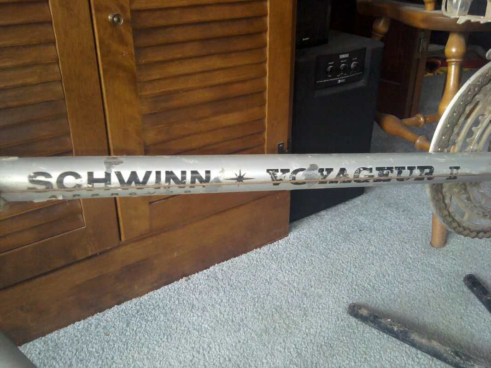
The original paint and cables along with the sweet "Schwinn Voyageur II" decal
-
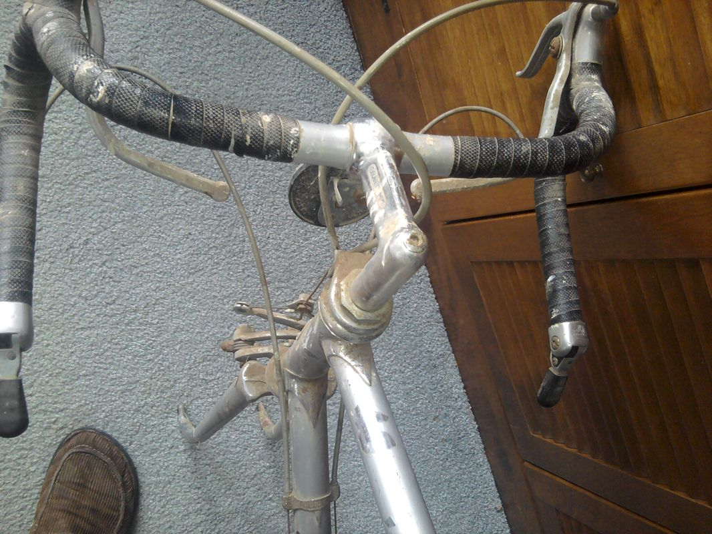
The bars,shifters, and general cockpit setup. The old centerpull brakes were toast. The suicide brake levers had to go as well.
-
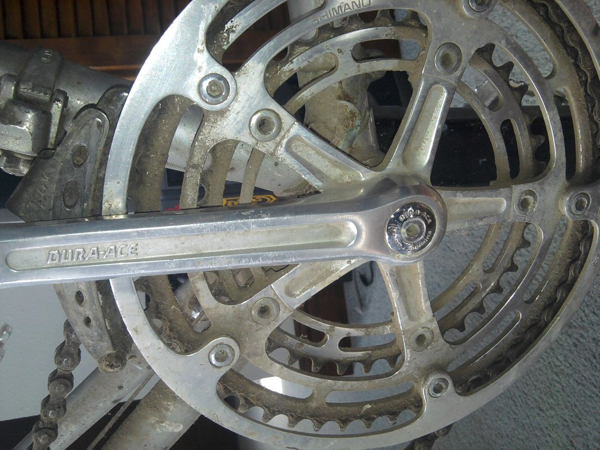
The original Dura Ace crank!
-
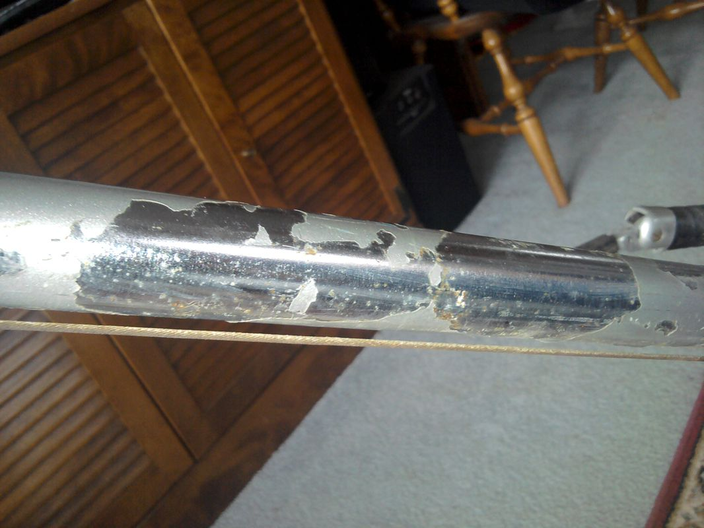
You can see how much the paint was flaking off the chrome. You'd think it would have bene easier than it was to get all the paint off...
-
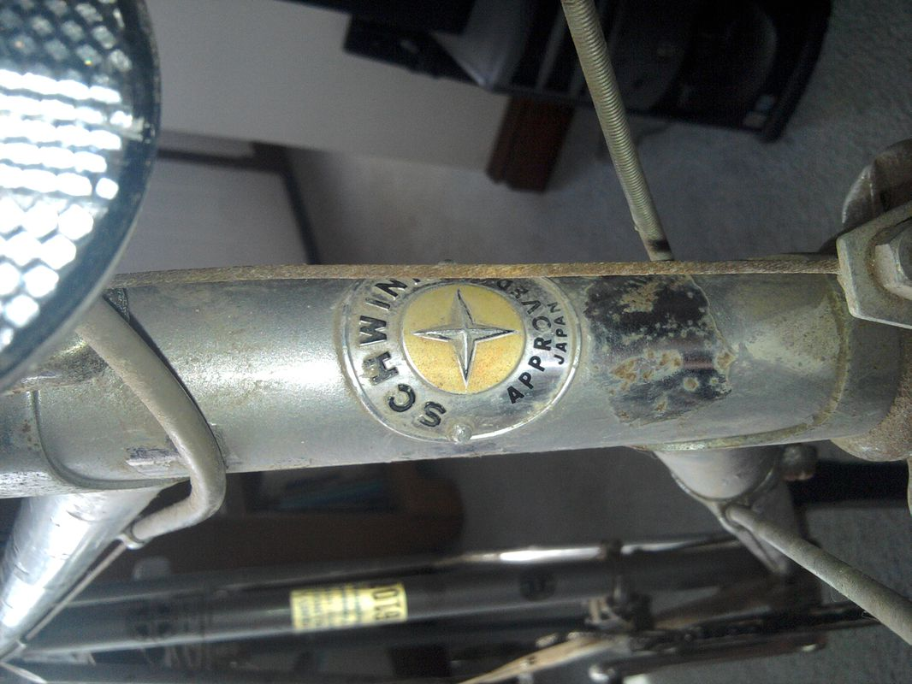
Schwinn Approved!
Shimergo Conversion and adding Bling
Campy 10-speed shifters are more ergonomic than any SRAM or Shimano brifters, they're also fully rebuildable. When SRAM or Shimano brifters start malfunctioning you have to replace them. The shift tolerances for Campy 10 speed are the same for Shimano 8 speed which makes the perfect match! You get 8-speed drivetrain durability and cost with the ergonomics and functionality of nice brifters.
It's not that I was unhappy with the bar end shifter setup. But I didn't like the amount of cable drag (since I routed cables entirely under the bar wrap for a cleaner look). The Campy shifters keep the same clean look but shorten the housing distance and allow the rider to have full control over brakes and shifting from one hand position.
I decided to spring for some Velo Orange Racks and pedals. This accomplished the following:
- Adding more chrome to an already super chrome bike.
- Adding cargo capacity for the long tours I will never take this bike on.
- Pedals will allow me to just wear normal street shoes for when I never ride this bike.
A PDW Fender Bot light was mounted to the chrome fenders and a smaller 8-speed cluster (12-23 teeth) was added so I could use the super flashy Dura Ace 8 speed derailleur.
Derailleur cage length determines the number of teeth/range of gears you can have on a bike. As usual, Sheldon Brown is the go-to resource for this. Determining the difference in teeth on the cassette and front chain rings and adding them together:
- Max chainring difference (big - small): 52 - 39 = 13
- Cassette Cog Difference: 23-12 = 11
- Total Drivetrain capacity: 11 + 13 = 24
- Shimano SS (short cage) road capacity is 29, with a maximum cassette cog size of 27.
I erred on the side of caution and opted for a gear cluster that would for sure not go beyond the capacity. This gearing is WAY too tall for actually touring...
Putting it Together
Below is a somewhat thorough documentation of the build process.
-
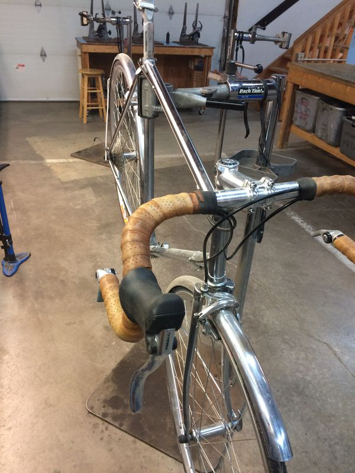
The bike (w/o saddle) that I was starting with.
-
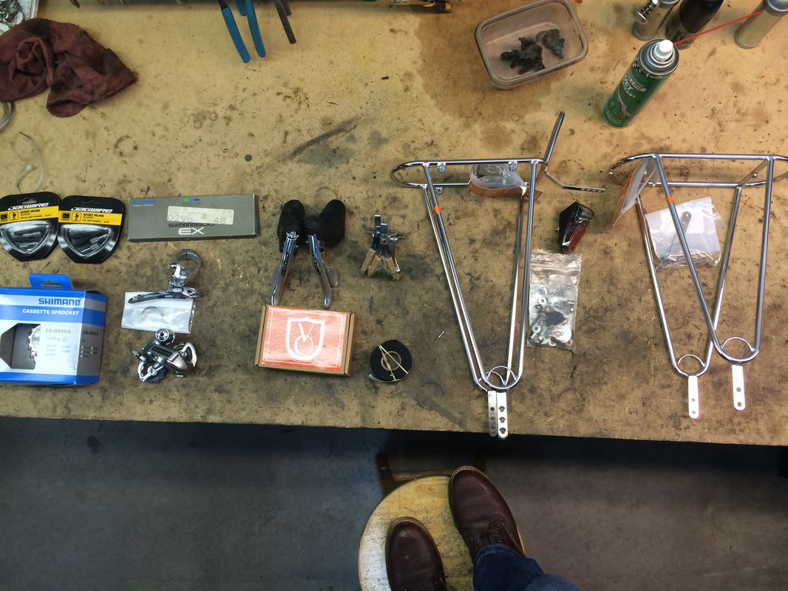
All the new parts laid out in a nice semi-orderly fashion.
-
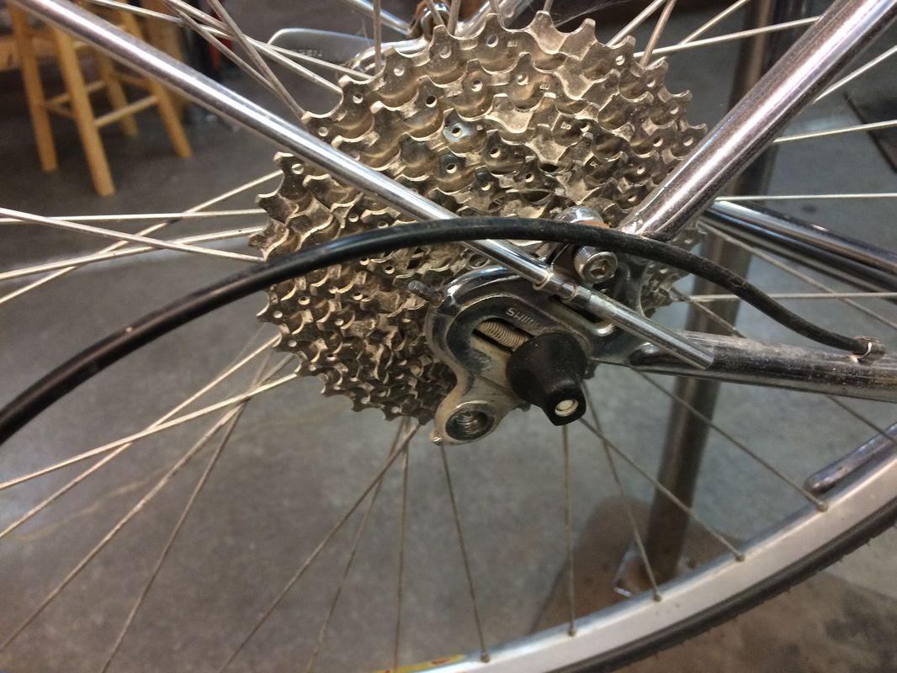
This "pie plate" of a rear cassette had to go. 9 speed is for the birds and 34 teeth is WAY too many teeth (in reality, I need every bit of mechanical advantage I can get but this rear cassette wouldn't work the fancy rear derailleur)
-
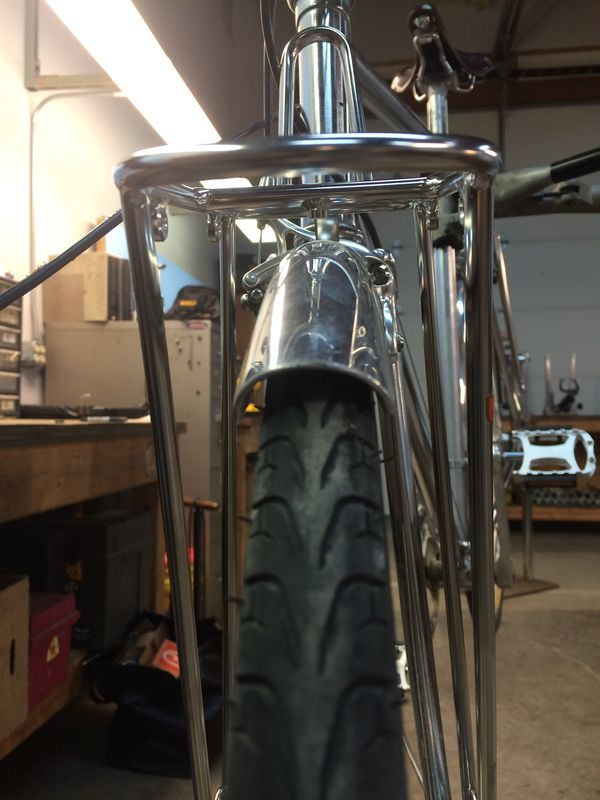
The front rack and fender mounted cleanly. These fenders don't leave much room for clearance. The bike is no longer "Schwinn Approved" since I haven't reinstalled the head badge.
-
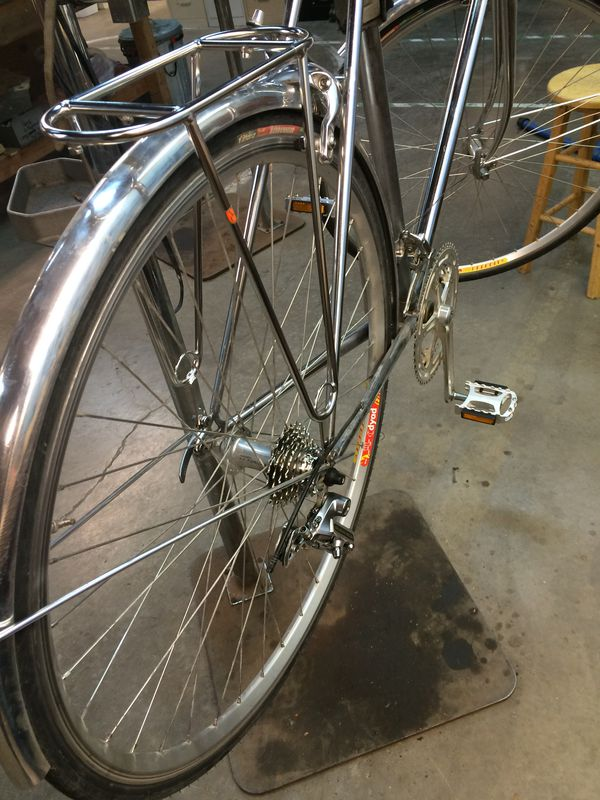
Rear rack getting mounted and the new rear derailleur has been installed.
-
 The derailleur hanger was out of alignment so here it is getting straightened back out.
The derailleur hanger was out of alignment so here it is getting straightened back out. -
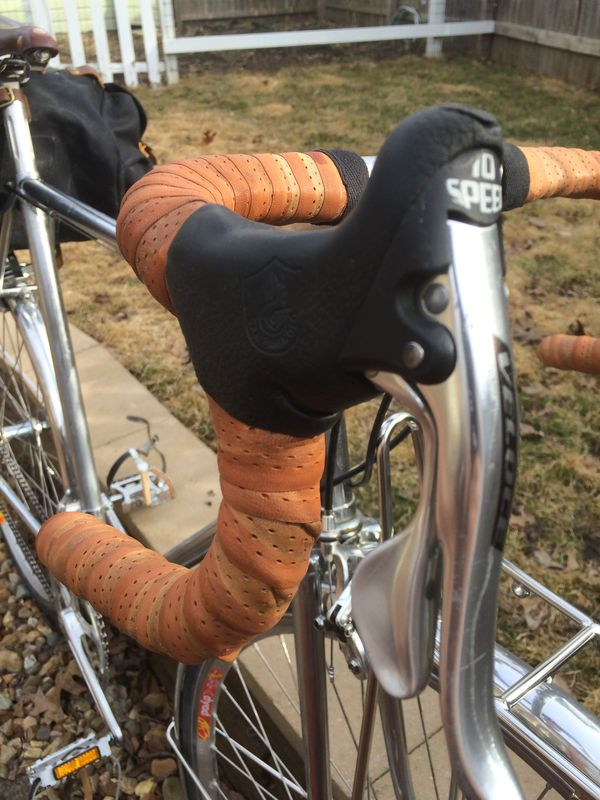
Campy shifters installed and bars re-wrapped.
-
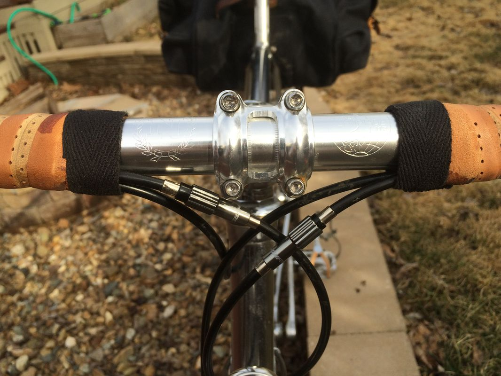
Cables all under the bar wrap with barrel adjusters for both shifter cables
-
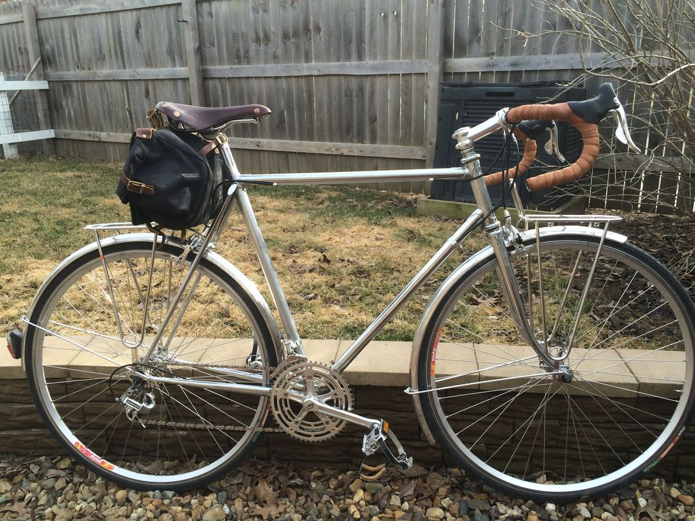
The complete bike minus bar plugs.
Final Thoughts
All told this wasn't too onerous of a task. The shifters installed easily and cable routing wasn't difficult. I nearly had to buy $30 tension clamp nuts from Campy. Thankfully Erin found a wayward nut while cleaning and recognized it to likely be a bike part!
I'm looking forward to putting some miles on this bike during nice weather. Even will full coverage fenders it's quite unlikely I'll take this out in the rain.